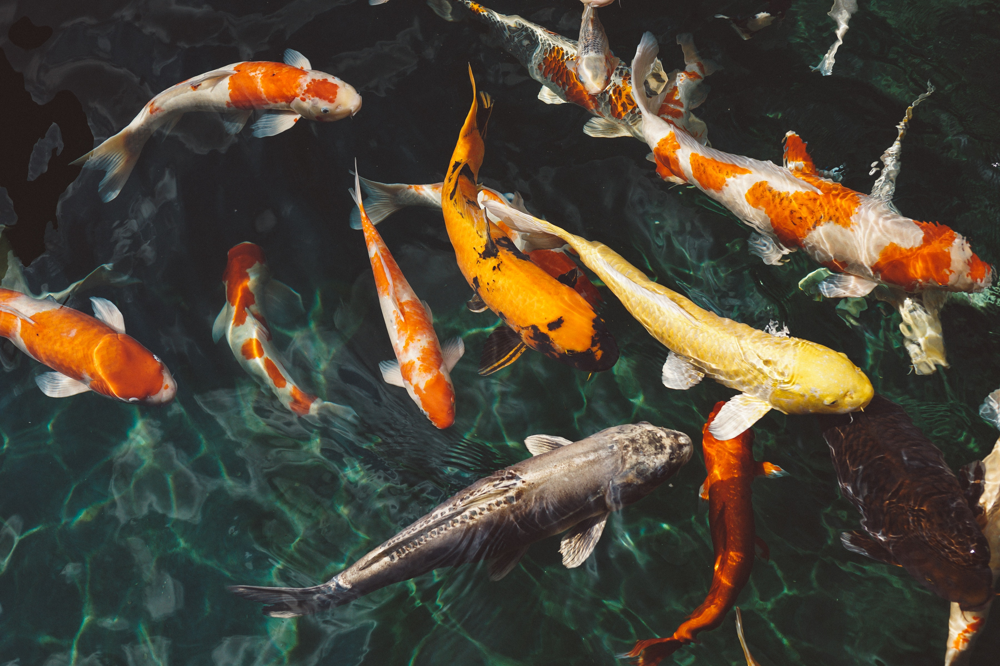

INTRODUÇÃO
A piscicultura é um dos ramos da aquicultura, que desenvolve o cultivo de peixes e outros organismos aquáticos. Essa modalidade de criação cresceu muito nos últimos anos e movimenta uma parte importante da economia do mercado no Brasil atualmente. Graças ao extenso território litorâneo do país, além da enorme produção local, o Brasil se tornou um dos países que mais consome peixe no mundo. Na piscicultura a criação dos peixes é monitorada, as espécies são totalmente controladas, desde o início da vida até o momento em que atingem a condição ideal para consumo, com o uso de ferramentas, substâncias específicas e acompanhamento periódico para estimular o crescimento saudável dos animais.
INFRAESTRUTURA
O sucesso do seu negócio vai depender principalmente da escolha do local a ser desenvolvido o projeto. Dessa forma, a qualidade da infraestrutura se torna primordial e diversos fatores do local devem ser considerados e analisados antes de sua implantação. Os fatores biológicos também são muito importantes, você deverá observar principalmente a água em termos de quantidade e qualidade, o solo, a topografia do terreno e os fatores climáticos. A piscicultura pode ser feita em diferentes lugares como mar, represas, lagos, lagos artificiais, tanques de redes, tanques comuns, barragens ou viveiros. As duas principais alternativas para trabalhar são a da construção de um lago artificial ou viveiro.
ESPÉCIES
A decisão sobre quais espécies devem ser cultivadas é muito importante, mas é preciso lembrar do consumidor, afinal de contas, ele é quem movimenta o mercado. É por isso que, mesmo que determinada espécie apresente características ideais de resistência, crescimento, boa conversão alimentar e reprodução, se suas características de aparência e paladar não agradarem ao consumidor, deve-se dar preferência ao cultivo de outras espécies de peixes que atendam melhor a este conjunto de requisitos. As mudas de peixes mais indicadas para entrar na área de piscicultura são pacus, tilápias, carpas capim, carpas colorida, carpas húngaras, curimbatás, dourados, lambaris, piaçus, piracanjubas, entre outras.
CUIDADOS
No início, a alimentação para os peixes tem que ser feita de 3 a 5 vezes por dia. Após os seis meses de vida os peixes podem ser submetidos ao processo de engorda, recebendo quantidades maiores de ração entre 5 e 8 vezes por dia. Para a reprodução é necessário separar os casais de cada espécie, deixando-os juntos entre 15 e 30 dias. As ovas precisam ser separadas em outro tanque até um mês de vida.
